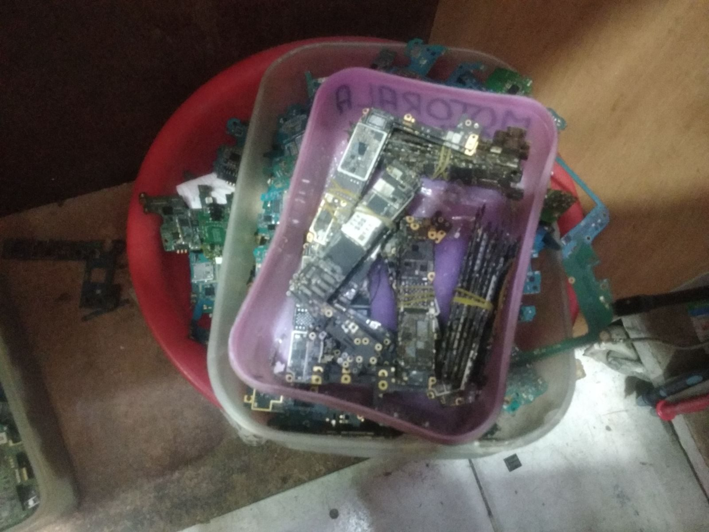
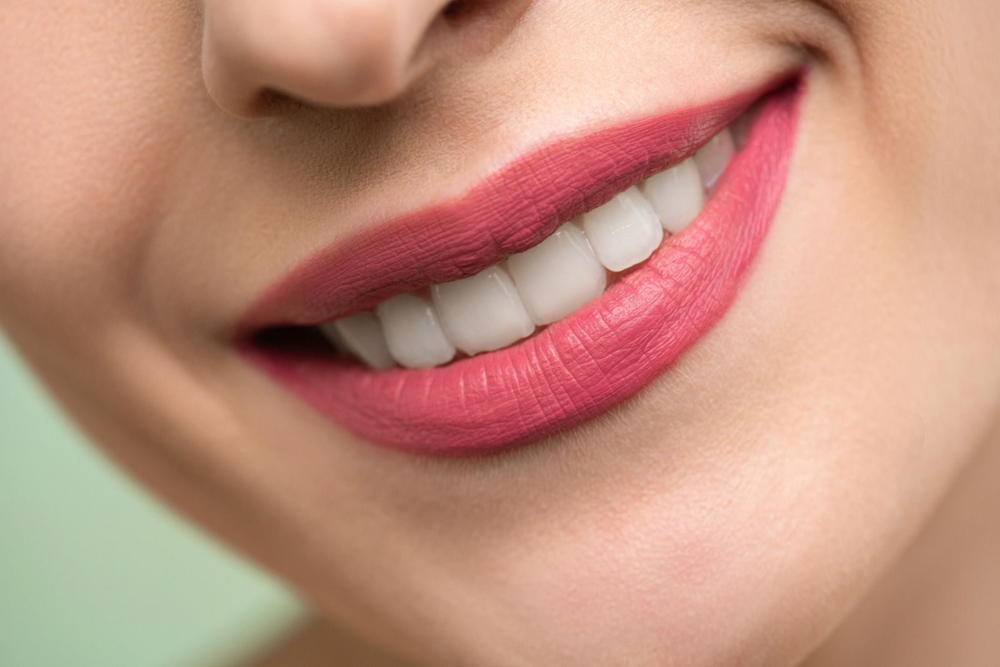

Jardines de Morelos · Ecatepec
Ortodoncia con calma y seguimiento.
Consultorio dental especialista en ortodoncia, en la esquina de Fuente del Secreto y Fuente de Trevi. 4.9 de 5, a partir de 49 opiniones.

Enfoque
Brackets, retratamientos y seguimiento.
La ficha pública no publica un catálogo cerrado de precios. El consultorio se presenta como especialista en ortodoncia. Un directorio genérico también lista prótesis, limpiezas, coronas, implantes y endodoncia; eso no está confirmado por el propio consultorio, así que conviene preguntar al agendar.


Opiniones
Opiniones
“La Dra. Stephanie es muy buena, el trato es muy cálido, muy amable, una excelente persona, muy profesional.”
Reseña en Google · septiembre de 2025 · 5 estrellas
“La Dr. Retomó un tratamiento mal hecho que yo traía y logró componer mis dientes muy rápido. […] siempre está al pendiente de tu proceso.”
Reseña en Google · septiembre de 2025 · 5 estrellas
“Venia con un tratamiento de ortodoncia de otro consultorio y la Dra. Stephanie me atendió excelente, explicándome todo el proceso.”
Reseña en Google · septiembre de 2025 · 5 estrellas
“Revisión muy cara y no resolvió nada porque ella no tenía conocimiento. […] Perdí $1,500 de pura ‘revisión’.”
Reseña en Google · octubre de 2025 · 1 estrella.
Antes de la cita
Preguntas frecuentes
¿Cuál es el horario?
Lunes cerrado. Martes, miércoles y viernes de 10:30 a 18:00; jueves de 11:30 a 18:00; sábado de 10:30 a 17:00. Domingo cerrado.
¿Dónde están?
Esquina con Fuente del Secreto, Fuente de Trevi, Jardines de Morelos, C.P. 55070, Ecatepec de Morelos.
¿Quién atiende?
Atiende la Dra. Stephanie.
¿Cómo agendo?
Al 55 6189 5397.
Jardines de Morelos
Fuente de Trevi
Esquina con Fuente del Secreto, Jardines de Morelos, Ecatepec de Morelos, C.P. 55070 (verificar).
| Lunes | Cerrado |
| Martes, miércoles y viernes | 10:30 – 18:00 |
| Jueves | 11:30 – 18:00 |
| Sábado | 10:30 – 17:00 |
| Domingo | Cerrado (un directorio lo da como abierto; confirma) |